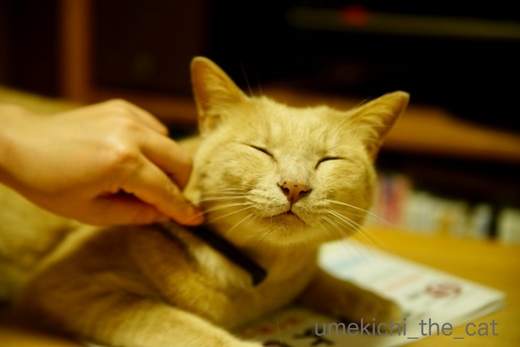
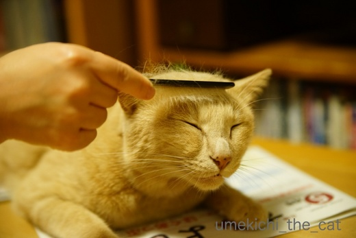
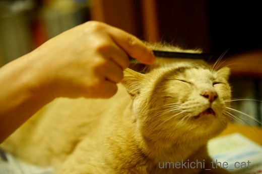
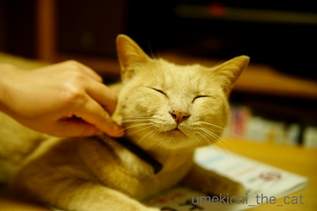
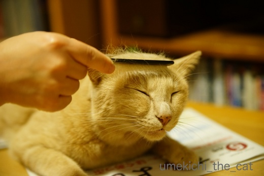
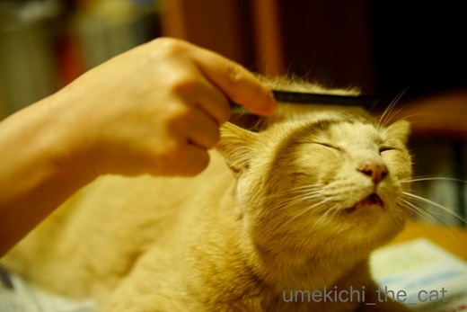

特におでこが好きなんです [梅吉]
にゃんこの皆さんは今が絶賛換毛期ですね＾＾
抜け毛処理とベランダでくりんくるんした後の埃を払うために
梅吉さんにも毎晩ブラシをしています。

ブラシというかクシ。更に言うなら100均のクシ。
中学生の時リーゼント男子がこんなクシを持っていたような・・・

首回りが良い感じですか？
他のブラシ類は一切拒否。ファーミネーターなんてとんでもない。
シンプル・イズ・ベスト、プチプラが梅吉さんのチョイスです(*>艸<)

ここもお好きな箇所ですよねー＾＾

![[猫]](https://blog.ss-blog.jp/_images_e/101.gif) ああ〜
ああ〜![[黒ハート]](https://blog.ss-blog.jp/_images_e/136.gif) たまらんわぁ
たまらんわぁ
せまーい猫の額が特に気持ちが良いようです。
首回り＆顔まわりはもちろん最近は胸やお腹周りもあまり嫌がらなくなりました。
が、おちり付近から表情がきびしくなりおしっぽは逆鱗ポイントですw
たくさん抜けて来るので（短毛種比）ブラシ係もやりがいがありますよ(๑˃̵ᴗ˂̵)و
 ↑ガブッと一押し↑
↑ガブッと一押し↑
前々記事の続き。
大神神社から下界を見渡してみました。
手前の方にこんもりと二つ並んでいる山、右が耳成山、左が香具山。
その二つの間付近のさらに奥に（写真では確認できませんが）畝傍山があり
その麓に橿原神宮があります。
後方、大きく連なっている山は葛城山と思われます。
右側手前に写っているのは大神神社の第一鳥居。
（間違っていたら指摘してくださいねー）
この日はレンタカーだったのでフットワーク軽いですよ。
長谷寺に牡丹を見に行きます。
初瀬詣での長谷寺。
ながーい登廊を登ります。
こんな階段が角度を変えて後二つほど連なります。
山の寺社巡りは足が丈夫じゃないと行けません。
お目当の牡丹・・・・
元気に咲いていたのはこの鉢を入れて３鉢あったかどうか。
地植えの株も含めてあとは無残な姿でした（泣）
今年は山も花が咲き出すのは早かったようです。
嫌な予感を抱えつつ女人高野の室生寺へ。シャクナゲが咲き誇っているはずなのですが・・・
この時点（午後１時ごろ）で半袖で歩いていても暑かった！
予感的中！シャクナゲも惨敗ですw
ボロ隠しにフォトジェニックな五重の塔と一緒にパチリ。
こうするとお花の残念な感じが目立たないでしょう？(^▽^;)
室生寺は今回が初めて。
良い仏像が沢山あるので楽しみにしていました。
関西に住んでいて良いところは名刹・古刹に足を運んで
仏像が本来安置されている環境を丸ごと楽めることなんです。
が、堂内が暗くて仏像がよく見えない悲劇に見舞われることも・・・
で、室生寺の本堂＆金堂は最高に暗かった(꒦ິ⌑꒦ີ)
本堂の如意輪観音菩薩像を特に楽しみにしていたのですが暗くてお顔が全然見えない。
あまりに見えない為か厨子の手前に
仏像の顔部分を引き伸ばした写真（単なる印刷物？）が置いてありましたwww
照明を増やすとかはだめなのかな？だめなのかしら？？
ありのままで良いんですけどねー。
もう少しハッキリご尊顔を拝したかったなぁ。
牡丹・シャクナゲは終わっていましたが山は山藤で彩られていましたよ＾＾
抜け毛処理とベランダでくりんくるんした後の埃を払うために
梅吉さんにも毎晩ブラシをしています。

ブラシというかクシ。更に言うなら100均のクシ。
中学生の時リーゼント男子がこんなクシを持っていたような・・・

首回りが良い感じですか？
他のブラシ類は一切拒否。ファーミネーターなんてとんでもない。
シンプル・イズ・ベスト、プチプラが梅吉さんのチョイスです(*>艸<)

ここもお好きな箇所ですよねー＾＾

せまーい猫の額が特に気持ちが良いようです。
首回り＆顔まわりはもちろん最近は胸やお腹周りもあまり嫌がらなくなりました。
が、おちり付近から表情がきびしくなりおしっぽは逆鱗ポイントですw
たくさん抜けて来るので（短毛種比）ブラシ係もやりがいがありますよ(๑˃̵ᴗ˂̵)و
前々記事の続き。
大神神社から下界を見渡してみました。
手前の方にこんもりと二つ並んでいる山、右が耳成山、左が香具山。
その二つの間付近のさらに奥に（写真では確認できませんが）畝傍山があり
その麓に橿原神宮があります。
後方、大きく連なっている山は葛城山と思われます。
右側手前に写っているのは大神神社の第一鳥居。
（間違っていたら指摘してくださいねー）
この日はレンタカーだったのでフットワーク軽いですよ。
長谷寺に牡丹を見に行きます。
初瀬詣での長谷寺。
ながーい登廊を登ります。
こんな階段が角度を変えて後二つほど連なります。
山の寺社巡りは足が丈夫じゃないと行けません。
お目当の牡丹・・・・
元気に咲いていたのはこの鉢を入れて３鉢あったかどうか。
地植えの株も含めてあとは無残な姿でした（泣）
今年は山も花が咲き出すのは早かったようです。
嫌な予感を抱えつつ女人高野の室生寺へ。シャクナゲが咲き誇っているはずなのですが・・・
この時点（午後１時ごろ）で半袖で歩いていても暑かった！
予感的中！シャクナゲも惨敗ですw
ボロ隠しにフォトジェニックな五重の塔と一緒にパチリ。
こうするとお花の残念な感じが目立たないでしょう？(^▽^;)
室生寺は今回が初めて。
良い仏像が沢山あるので楽しみにしていました。
関西に住んでいて良いところは名刹・古刹に足を運んで
仏像が本来安置されている環境を丸ごと楽めることなんです。
が、堂内が暗くて仏像がよく見えない悲劇に見舞われることも・・・
で、室生寺の本堂＆金堂は最高に暗かった(꒦ິ⌑꒦ີ)
本堂の如意輪観音菩薩像を特に楽しみにしていたのですが暗くてお顔が全然見えない。
あまりに見えない為か厨子の手前に
仏像の顔部分を引き伸ばした写真（単なる印刷物？）が置いてありましたwww
照明を増やすとかはだめなのかな？だめなのかしら？？
ありのままで良いんですけどねー。
もう少しハッキリご尊顔を拝したかったなぁ。
牡丹・シャクナゲは終わっていましたが山は山藤で彩られていましたよ＾＾

カフェオレ色の梅吉

梅吉 2023年8月10日 永眠


梅吉と出会った譲渡会

犬猫の理由なき殺処分ゼロ
妄想広告
UMEKICHI 光

爆発的に早い！
時々攻撃的！
Thanks to Mr.Boss365
爆発的に早い！
時々攻撃的！
Thanks to Mr.Boss365

なんて気持ち良さそうなお顔を♪
これはやりがいがありますねぇ～(#^.^#)
しっぽはダメですか（笑
こんなに穏やかなお顔しているのに
厳しいお顔になるのですね(;^_^A
by きぃ (2018-05-08 15:42)
「イケメン漢 梅吉さん」とは身だしなみにも
ちゃんと気を遣ってらっしゃるんですねぇ(^O^)
クシでも こうやって気持ち良さそうに
ブラッシングをさせてくれるなんて羨ましいです^^;
我が家はかなりご機嫌が良くないとブラッシングさせてもらえません(*_*)
その時でももちろんゴッドマザーのみでめっちゃ短時間(-_-)
基本はゴッドマザーの手ぐし（ナデナデとも言うｗ）で
ひたすら抜け毛を取ってますｗ
by ニッキー (2018-05-08 16:15)
こーゆークシがお好きなら、梅吉様は美容院より床屋の方がお好きかしら(^_^;)
御写真を拝見して、香具山はこんなに低いのに、そこに霞がかかったことで春の
到来を伝統的に表現してきたことが、チト解かりませんねぇ(^_^;) 五重の塔の
御写真、凄く素敵です(〃'∇'〃) 保存の問題もあるとは思いますが、昔は今より
明るくなかったから暗くても御尊顔を拝めたのかも(＠_＠;) はたまた心眼^_^;
by middrinn (2018-05-08 16:20)
梅吉さん気持ちよさそー。最近はお鼻にぽちぽちが付いたのでしょうか。
関西でお寺めぐりをしようと思ったら逆に見所ばかりで大変ですね。ちぃさんのように知識のある方ならいいけど私だったらどこに行ったらいいのやら。
by zombiekong (2018-05-08 16:31)
こんな気持ちのいい表情をされたら
１日中ケアしてあげたくなりそう。
長谷寺は真冬しか行ったことが無いので新緑の季節も行ってみたいです。
by 響 (2018-05-08 17:18)
換毛期はもの凄く抜けるのですね！
梅吉さん気持ちよさそうですね(^^)
by ma2ma2 (2018-05-08 19:45)
梅吉さんの恍惚とした顔、本当に良い表情です。
おしっぽは止めてあげて下さいね。
奈良は教科書に出てくるような地名がいっぱいで、ワクワクします。
室生寺は中学生の頃、中学生の雑誌の付録で『室生寺の少女』という
ミステリーが付録として付いていました。
関西にはよく来ていたのに、室生寺まではたどり着かず、
50年近く経って訪れた時に嬉しかったのを覚えています。
by kiki (2018-05-08 20:21)
ま～梅吉さんったら・・・そこ、そこ、そこや～っという声が聞こえてきそう♪
毎日猫パンチをかわしながらブラッシングしている私と大違い、羨ましいにゃ～(^▽^;)
長谷寺は桜の頃もいいですよ。
仏さまはだいたい暗いお堂の中にいらっしゃいますもんね。
しっかり細部まで見るには美術展にお出ましになった時が一番。
ただし、魂は法要で抜いてあるそうです^^;
by ゆきち (2018-05-08 21:12)
梅吉さん、めちゃ気持ちよさそうですね！^^)
この時期はブラッシングしてもキリがありませんね。
いろいろな建物が建て替えられていく中、
昔から変わらぬ風景のお寺や神社は、見ていてとても癒されます。
by yes_hama (2018-05-08 21:20)
実は私、ブラッシングは殆どしたことがないような(^^;
ユキは誰がブラッシングしているのか？
そんな感じなんです。
私、失格ですね(^^;
by riverwalk (2018-05-08 22:04)
あかりも、旅先のホテルでただで頂いた
（勝手に持って帰った、とも言う）プラスチックのくしで
といています( ´艸｀)
猫用ブラシを２～３こもっているんだけど
どれも嫌なんだそうで…＾＾；
オデコと耳の前が気持ちいいそうです＾＾
シャクナゲと五重の塔、素敵なお写真です(*^^*)
by マーヤ (2018-05-08 23:24)
うちは、毛が長いのがきてからすっかり
ロン毛だけやればいいやという愚かな考えになってしまっています。。
（しかもやっていない^^;）
ファーミネーターはごっそり取れるので気持ち良いです。
毛はこねこねしてボールを作って遊ばせています。自給自足（笑）
リーゼントて！（笑）
中学生でリーゼントってもう、「おまえはくさったミカンじゃない！」
・・・の頃あたりが彷彿といたしますです・・・
新緑の頃のお寺もオツですなぁ・・・。
by Ja-Kou66 (2018-05-09 01:16)
3匹くらいだったら手入れも出来ますねぇ。
長男君、次男君、末娘の3匹時代は私もブラシをかけてました。
慣れると気持ち良いのでしょうが
たまに（年に数回レベル）ブラシすると怒られます＾＾；
by ぽちの輔 (2018-05-09 07:13)
むふー、このタマラン顔♪ にゃんことよりクローズになれるひと時ですね。
by Ginger (2018-05-09 12:35)
なんとまぁ、気持ちよさそうなお顔^^
この目がたまりません^^
おでこ好きですよねー。あおはそうでもないんだけど、うみもおでこのブラッシングは大好きみたい。
リーゼントって久しぶりに聞いたなあｗｗ
室生寺にも行かれたのですね。修学旅行でうちの高校は室生寺まで攻めたんですよ(笑) 北海道から行ったのに凄いよね^m^
でもほんっと駆け足で、五重塔前でお坊さんのお話を聞いてすぐに移動になっちゃったの。そのときの景色がとっても綺麗で忘れられなくて、ぜったいまた来るぞ！ってそのとき思ったんだ〜。
それ以来まだ行けてないから、いつかは絶対行きたい室生寺なのです♪
by リュカ (2018-05-09 16:56)
梅吉くん、うっとりしてる～。
このうっとり顔が、おちり付近に近づくとｗ
そこは自分でしっかりやってるにゃ！！プライベートゾーンにゃ！！
トイレの後にしっぽをひょいっとしておちりの確認するなんて
にゃん権侵害にゃ！！
うちの子たちも言ってそう(*^-^*)
by emi (2018-05-09 17:13)
家の猫にも同じ事してましたけど、本当に気持ちよさそうな表情になりますよね(^^)
今度、遊びに来る「しょうちゃん」にもしてあげようかな・・・。
by kou (2018-05-09 19:01)
夕方散歩してたご近所のワンちゃんも
この時期毛が抜けてました
特に
背中に櫛を当てると気持ちよさげでした
そこの奥さんは掃除機がよく壊れる
って言ってたなぁ…
（中型犬だから抜け毛も多いのか？）
橿原神宮におまいり行った昔（40年近く前）
突然脇腹が痛くなって
それも痛みが増して吐き気もして
救急病院へ駆け込んだら
尿管結石でした
一晩中痛さと戦い 点滴と薬で
石が出たら嘘のように
痛みがおさまりました！
橿原神宮はあの激痛を思い出す所です
by ヨッシー (2018-05-09 20:05)
梅吉さん、なんて気持ちよさそうなお顔！
うっとりしてますね＾＾
こんなに喜んでくれるなら、楽しいですね～＾＾
ああ、名前だけは何度も聞いたことがあるお山ばかり‥
素敵なところなんでしょうね。
お花は今年はお山でも早かったのですね、残念。
暗くて見えない‥そ、それは‥ずうっとそうなんでしょうかねえ？＾＾；
by sana (2018-05-09 20:28)
うわ～梅吉くん気持ちよさそ～。特に額の時のカオ(*´▽｀*)
うちはそんなにうっとりしてくれませんよ～(;O;)
by palpal (2018-05-09 21:10)
私も、100均のブラシを使ってます（ﾟ□ﾟ）
by えーちゃん (2018-05-09 23:25)
100均のクシで、なんてうっとりの顔（≧∇≦）
気持ち良さげな感じが溢れてますぅ！！
by よーちゃん (2018-05-10 08:44)
こんにちは。
梅吉のブラシングの表情・・・細目が・・・最高です！！（⌒ー⌒）
大神神社・長谷寺・室生寺・・お寺巡りいいですね！！
疲れますが・・・長谷寺の階段は修行僧気分になります(=^･ｪ･^=)
by Boss365 (2018-05-10 16:06)
きぃさん＞
しっぽが一番フローリングにモップがけしているので（笑）
ぜひともブラシを入れて綺麗にしたいのですが・・・(^▽^;)
しょうがないので一緒にお風呂に入った時に
濡れタオルでよく拭くようにしていますw
ニッキーさん＞
自分でする毛繕いも結構熱心なので
「我が家のおしゃれ番長」と呼ばれています(*>艸<)
あ！手ぐしって抜け毛が良く取れるんですよ。
我が家もクシの後の仕上げは手ぐしです。
「あら〜まだまだ抜けるじゃない・・」と
クシに戻って無限ループになりますがw
middrinnさん＞
梅吉は断然床屋だわー。
「おやじぃ、ひげあたってんかー」って言いそうです(*>艸<)
大和三山、どれも低いです。
当時の身長の低かったであろう日本人には
無理のない目線で優雅に歌を読める高さだったとかw
この低山に霞がかかったかどうかは・・・心眼かも(^▽^;)
五重の塔の写真はおっとが撮りました。
「みなさん勘違いしてる・・・」とアピールして来たので
ここにお知らせしておきますwww
zombiekongさん＞
お鼻のぽちぽち、幼い頃はなかったのですが
１才を過ぎた頃くらいからかな？出てきました＾＾
そばかすみたいで可愛いでしょー！！
梅吉のやんちゃな性格を表すような
チャームポイントだと思っています(*>艸<)
関西一円はほんと見所だらけで困ります・・・
私の知らない通好みのお寺もたくさんあるので
勉強しながら行き先を選んでいますよ(｀_´)ゞ
響さん＞
真冬の長谷寺も素敵そうです！雪が降ったりするのかな？
あの五重の塔に雪が積もっていたらめちゃくちゃ絵になりそうです。
藤の写真が響さんのと被っちゃいましたー。
でも断然響さんの無事の方が綺麗です＾＾
ma2ma2さん＞
今がちょうど抜け毛のピークです。
短毛種の梅吉でも相当な毛がフローリングを舞っているので
長毛種を飼っている方の苦労がわかります・・・
kikiさん＞
実はおしっぽが一番クシを入れたいところなのです・・・
起きて活動している間はフローリングをモップがけ状態ですから
ゴミをかき集めているのではとw
お風呂で念入りに拭いて良しとしましょうか＾＾
室生寺はちょっと行きにくい場所ですものね！
私はkikiさんよりだいぶ早く６年経って訪れることが出来ましたよ(≧▽≦)
室生寺のミステリー、気になります！！
ゆきちさん＞
おちりから下はこてつくんとおんなじ反応ですよー(^▽^;)
梅吉はパンチだけじゃなくて
ガブおよびダンゴムシケリケリも付いてくるのでさらに危険かもw
室生寺の仏様たちはホント美術展へのお出ましをお願いしたいです。
ってそうなるとすごい人なんだろうなー。
yes_hamaさん＞
アズ氏ほどではありませんが
梅吉も顔まわりが少しシュッとしたかもしれません＾＾
猫の毛はやればやるほど抜ける、と聞いたことがあります。
やりすぎてハゲを作っちゃったとか (^▽^;)
適度にブラッシング適度に舞う猫毛玉が
ちょうど良いくらいかもしれませんね＾＾
riverwalkさん＞
あらら？
ユキちゃんはriverwalkさんだけが抱っこ出来たかと・・・？？？
抱っこはできないけど奥様か娘さんがお手入れしているのかな？
ユキちゃんいつも綺麗な毛並みをしているのできっとそうですよ！！
家族のサポートに感謝、ですね(^_－)☆
（ヾ(｀◇´)ﾉ彡はやめておきますねーwww）
by ちぃ (2018-05-10 16:18)
マーヤさん＞
あかりちゃんもプチプラ派なんですね(*>艸<)
リサイクル派とも言う？＾＾
どんなブラシでも喜んでくれてキレイに出来るなら
嬉しいことですよねー。
五重の塔の写真、お誉めいただいてありがとうございます！
「撮ったのは私です！！」とおっとが強く訴えておりますので
お伝えしておきますね(^▽^;)
Ja-Kou66さん＞
比較したら当然ロン毛の子がブラッシング対象になりますよね (^▽^;)
うちは毛玉ボールを食べようとするので
（せっかく口に入らないようにしてるのに）遊ぶの禁止です！！
「顔はやばいよ、ボディやんな、ボディを」の頃ですよねー＾＾
リーゼントは、横浜銀蝿＆夜露死苦の時代でもありましたね(〃▽〃)
軽くググっていたら昭和の珍文化みたいにまとめられていましたwww
ぽちの輔さん＞
ぽちの輔さんのところは
みなにゃんをお手入れするのは大変ですよね！
確かにブラシは慣れみたいなところがあるかもー。
Gingerさん＞
猫同士でグルーミングしているみたいに思ってくれると嬉しいなー＾＾
時々ガブっとくるのもコミュニケーションの一部ですよね！ね！！
リュカさん＞
先代猫はブラシが嫌いでね。
おとなしい子だったからひたすら耐えているって感じだったの。
こんなに気持ち良さそうな顔してくれるの梅吉が初めてなので
とってもうれしいのですー＾＾
リーゼント、懐かしいでしょ。（中学、ヤンキー多かったの）
今はライブに行く矢沢永吉ファンくらいかなぁ。
肩にタオル、リーゼントみたいな(*>艸<)
室生寺は関西に来てもなかなか足を伸ばせない場所ですものね。
って高校の修学旅行！攻めてる！！
強く押す先生が居たのかしらね。
レンタカー借りたら大神神社とセットで行けるよ！ぜひぜひ(≧▽≦)
（もちろん公共交通機関でもね。時間かかるけど。）
by ちぃ (2018-05-10 18:10)
emiさん＞
そうか！プライベートゾーンよね。
私ったらなんてデリカシーの無い(^▽^;)
でもおトイレの後はひょいと確認するよねー。
たまにお宝をくっつけている時あるし！！
理由はそれだけじゃなく猫変態として見たいだけでもありますがwww
kouさん＞
しょうちゃんくらいkouさんに心を許してくれていたら
ブラシもさせてくれそう＾＾
気持ち良さそうな顔、見たいなー。
ヨッシーさん＞
猫を飼っているウチも掃除機の寿命が短いと聞きます！
ついでにPC関係も。
ほそーい猫の毛が隙間にまで入り込むんですって。
知人はPCの裏部分のを開けたら毛がごっそり出てきた・・・
と言ってましたよ (^▽^;)
橿原神宮で結石の激痛とは！！
あの痛さは尋常では無いと聞きます。
ヨッシーさん大変でしたね・・・
それ以降結石は出来ていませんか？
神様が「早いうちに治療した方がええで」と
知らせてくださったのでしょう＾＾
sanaさん＞
幼い頃は嫌いなブラシを使っていたのと
気持ちよくなるよりもじゃれつきたい子だったので
こんな幸せなお手入れタイムが持てるなんて思っていませんでした(≧▽≦)
奈良の桜井付近は歌に詠まれたり歴史の舞台になったところが沢山で
見所満載なんですよ。
少し足を伸ばせば飛鳥の方にも行ける楽しい場所です＾＾
堂内が暗いのは今後も変わらないのでしょうね・・・
御本尊ですからあるべき姿で、と言われると返す言葉がありませんwww
by ちぃ (2018-05-11 17:32)
palpalさん＞
ほんと、うっとりって感じですよねー＾＾
２にゃんさんにも100均のクシ、いかが？(*>艸<)
えーちゃんさん＞
梅吉と気が合いますね！＾＾！
ちなみにおっとも100均のブラシです(*>艸<)
使いやすいのが一番ですよねー。
よーちゃん＞
でしょでしょ(≧▽≦)梅吉、お財布に優しい子です＾＾
でも私も100円だからってすぐに買い替えたりせずに
汚れたら洗って使ってますよ＾＾偉いでしょ(*>艸<)
Boss365さん＞
サイコーに気持ちの良い顔をしてくれました＾＾
でもおしりあたりから気をぬくとビシッとガブっとくるので
油断できません(^▽^;)
山のお寺は境内も起伏があるのでお坊さんに健脚な方が多い理由が
わかったような気がします。
この日は階段だけで悟りが開けそうな気がしましたwww
by ちぃ (2018-05-11 17:41)